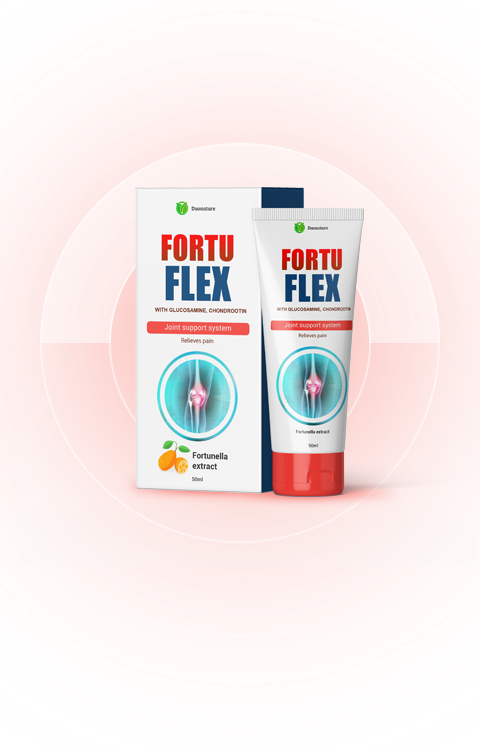

Cause delle malattie
legate alle articolazioni:
Cambiamenti dovuti all'età, usura alle articolazioni, esaurimento della cartilagine, predisposizione genetica
Sovrappeso, sforzi eccessivi, lesioni, stress
Stile di vita sedentario, alimentazione scorretta, abitudini dannose, carenza di vitamine

Principali vantaggi della crema Fortuflex
Allevia rapidamente il dolore, il gonfiore e l'infiammazione
Ristruttura le articolazioni
Migliora i processi metabolici nell'articolazione
Avvia i processi di ristrutturazione dell'osso e della cartilagine
Allevia gli spasmi muscolari
 Ordina
Ordina
Studio indipendente della crema Fortuflex
Organizzazione mondiale per il controllo delle malattie comuni, ha condotto una serie di studi clinici sulla crema Fortuflex nel 2019. Un totale di 3.500 persone con vari tipi e gradi di problemi articolari hanno partecipato alla sperimentazione. Ai termini dello studio, tutti i soggetti sono stati trattati con crema Fortuflex. 3.500 persone con vari tipi e gradi di problemi articolari hanno partecipato alla sperimentazione. Ai termini dello studio, tutti i soggetti sono stati trattati con crema Fortuflex.

Alla fine dello studio, sono state ottenute le seguenti percentuali:

Già sentito il risultato dopo il primo utilizzo

Noto un sollievo istantaneo dal dolore

Sconfito la malattia con in un solo trattamento

Rafforzato la salute generale delle articolazioni

Eliminati l'artrite e l'osteoartrite
Cosa rende la crema Fortuflex
così efficace?
Grazie alla formula speciale e alla presenza di ingredienti naturali altamente efficaci, la crema agisce sul fulcro dell'infiammazione, alleviandola. undefined La condroitina e la glucosamina contenute in Fortuflex agiscono al massimo e producono un effetto immediato sui tessuti interni dell'articolazione, impedendo la distruzione della cartilagine e del tessuto osseo.

Condroitina
- Stimola la sintesi di acido ialuronico, che rafforza non solo la cartilagine, ma anche legamenti e tendini;
- Stimola la formazione di altre sostanze da cui si costruisce il tessuto cartilagineo;
- Trattiene l'acqua nella cartilagine, migliorando l'ammortizzazione;
- Blocca gli enzimi che distruggono il tessuto connettivo;
- Ha un effetto antinfiammatorio.

Glucosamina
- Stimola la formazione di acido ialuronico, che trattiene l'acqua nel tessuto connettivo, fornendo elasticità;
- Stimola la sintesi del collagene, un componente importante della cartilagine, che garantisce la sua resistenza;
- Regola la quantità e la composizione del fluido intra-articolare;
- Inibisce l'infiammazione dei tessuti articolari;
- Sopprime la formazione di radicali liberi, rallentando l'invecchiamento dell'articolazione.
Estratto di kumquat
- Stimola il sistema immunitario;
- Ripristina le carenze di vitamine e minerali;
- Elimina le tossine dal corpo;
- Accelera la guarigione di legamenti, tendini e muscoli slogati;
- Aumenta la resistenza ai virus e alle infezioni.
Parere di un esperto
Marcello Pelosi Traumatologo, chirurgo del Reparto di Chirurgia Articolare e Artroscopia
La stragrande maggioranza dei moderni farmaci per le articolazioni sono semplicemente anestetici locali, che non hanno effetto sulla struttura della cartilagine stessa e quindi non curano l'articolazione. Cioè, mascherano la malattia che continua a progredire, portando a problemi ancora maggiori.
La crema agisce localmente, penetra direttamente nella cavità della capsula articolare e agisce direttamente sull'eliminazione della malattia. Ottimo per il trattamento di osteocondrosi, artrite, artrosi, disturbi del sistema locomotore.
 OrdinaCome utilizzare la crema Fortuflex?
Applicare la crema sulle aree problematiche delle articolazioni.
Strofinare sulla pelle con movimenti massaggianti.

Recensioni degli acquirenti
La mia schiena mi faceva molto male, un amico mi ha consigliato questo unguento e l'ho comprato. La schiena mi faceva un po' male, ma ogni giorno il dolore passava. Alla fine, dopo due settimane, sono andata di nuovo dal medico e lui è rimasto sorpreso nel dire che ero completamente sana, la mia schiena era completamente a posto! Ora ho sempre questa crema nel mio armadietto dei medicinali.
Ho fatto boxe per 14 anni, poi ho avuto gravi problemi alle articolazioni e ho dovuto lasciare il ring. Le vecchie ferite si sono fatte sentire e all'età di 31 anni sono diventato praticamente un invalido che non può alzarsi dal letto la mattina senza esercizi speciali. Sono stato in sofferenza per molto tempo finché non ho scoperto Fortuflex. Il dolore è scomparso molto rapidamente e ora mi sento come una persona completamente sana.
Ho lavorato tutta la vita come tata, aiutando gli sconosciuti, e quando ho avuti i miei nipoti sono diventata una nonna inutile che riusciva a malapena a muoversi dalla camera da letto alla cucina. Ho sofferto così per diversi anni finché mio figlio non ha ordinato Fortuflex e me ne ha portato una confezione. Ora ho recuperato completamente la mia salute, esco di casa da sola, cammino con i miei nipoti nel parco, vado a fare shopping.

Come si ordina?

Passo 01 Lascia una richiesta su questo sito
Passo 02 Attendere la chiamata di un esperto

Passo 03 Aspettatevi la consegna entro 3 giorni
Passo 04 Pagamento al ricevimento dell'ordine